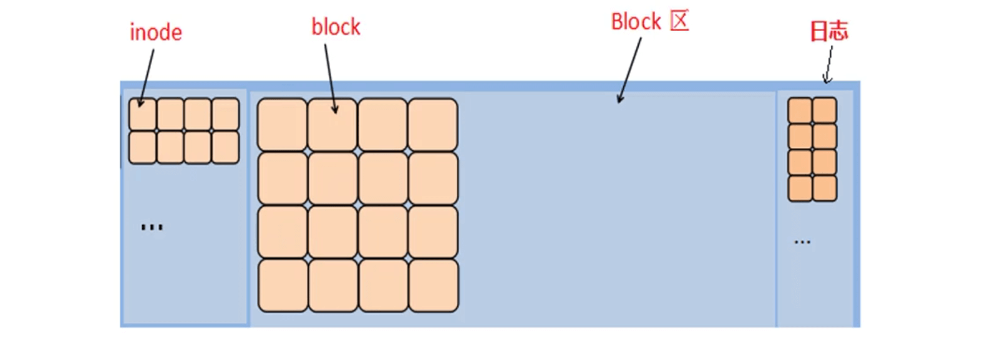
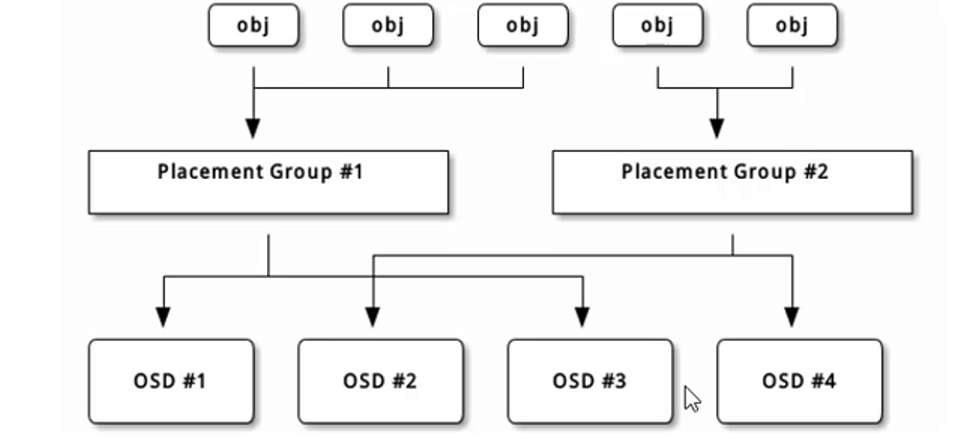

Ceph
概述
分布式存储
- 分布式是一种独特的系统架构，它由一组网络进行通信、为了完成共同的任务而协调工作的计算机节点组成
- 分布式系统为了用廉价的、普通的机器完成单个计算机无法完成的计算、存储任务
- 其目的就是利用更多的机器，处理更多的数据
常用的分布式文件系统
- Lustre
- Hadoop
- FastDFS
- Ceph
- GlusterFS
Ceph简介
Ceph是一种分布式文件系统
具有高扩展、高可用、高性能的特点
Ceph可以提供对象存储、块存储、文件存储系统
Ceph可以提供EB,PB级别的存储空间（EB>PB>TB>GB）
软件定义存储（Software Defined Storage）作为存储行业的一大发展趋势，已经越来越受市场认可
帮助文档
Ceph组件
OSDs
存储设备（共享磁盘）
Monitors
集群监控组件，绘制地图（文件，写明了磁盘的相关信息 ）
RadosGateway（RGW）
对象存储网关
MDSs
存放文件系统的元数据（
对象存储和块存储不需要该组件）Client
ceph客户端
Ceph特点
- 每个组件皆可扩展
- 基于软件实现
- EB级存储
- 默认3副本
- mon过半原则
实验环境准备
- 1台客户端虚拟机
- 3台存储集群虚拟机
- 每台存储集群添加两块新磁盘（sdb做缓存盘、sdc做数据盘）
| 节点 | 角色 | ip |
|---|---|---|
| client | 客户端 | 192.168.1.10 |
| node1 | 存储集群 | 192.168.1.11 |
| node2 | 存储集群 | 192.168.1.12 |
| node3 | 存储集群 | 192.168.1.13 |
ceph源配置
- node1添加一个CD驱动指向ceph10.iso镜像
- 做ftp源拷贝给其他服务器
所有节点配置好hosts解析配置ssh无密码连接
1 | #配置hosts域名解析 |
时间同步
- 和client时间同步
1 | [root@client ~]# vim /etc/chrony.conf |
关闭防火墙、SELinux
1 | [root@client ~]# for i in client node1 node2 node3 |
部署Ceph集群
部署MON集群
安装软件
- node1安装ceph-deploy脚本
1 | [root@node1 ~]# yum install -y ceph-deploy |
- 所有node节点安装ceph所有组件
1 | [root@node1 ~]# for i in node1 node2 node3 |
初始化MON配置
- 仅node1操作
- 主配置文件为ceph.conf(在ceph-cluster当前目录下)
1 | [root@node1 ~]# mkdir ceph-cluster |
- 远程所有node主机，拷贝配置文件，并启动ceph-mon服务
- 配置文件拷贝到/etc/ceph/ceph.conf
1 | [root@node1 ceph-cluster]# ceph-deploy mon create-initial |
部署OSD集群
创建磁盘分区表
- 仅在node1操作
1 | [root@node1 ceph-cluster]# ceph-deploy disk zap node1:sdb node1:sdc |
创建OSD共享
- 启动OSD服务、共享OSD磁盘
1 | [root@node1 ceph-cluster]# ceph-deploy osd create node1:sdc:/dev/sdb |
- 常见错误
1 | [ceph_deploy][ERROR ]RuntimeError: bootstrap-osd keyring not found; run 'gatherkeys' |
Ceph块存储
什么是块存储
Ceph块设备也被叫做RADOS块设备
RADOS block device：RBD
RBD提供了企业功能，如快照、COW克隆等
创建块共享
创建镜像（块设备）
- 查看存储池（默认有一个rbd池）
1 | [root@node1 ~]# ceph osd lspools |
- 创建镜像、查看镜像
1 | [root@node1 ~]# rbd create jacob --image-feature layering --size 10G |
- 调整镜像大小
1 | #扩容 |
客户端通过KRBD访问
- 客户端需要安装ceph-common软件包
- 拷贝配置文件（否则不知道集群在哪）
- 拷贝连接密钥（否则无连接权限）
1 | [root@client ~]# yum install -y ceph-common |
客户端写入数据
- 格式化
1 | [root@client ~]# mkfs.xfs /dev/rbd0 |
- 挂载磁盘、写入数据
1 | [root@client ~]# mount /dev/rbd0 /mnt/ |
快照
创建快照
- 查看快照
1 | [root@node1 ~]# rbd snap ls jacob |
- 创建快照
1 | #为jacob镜像创建快照，名称为jacob-snap1 |
恢复快照
- 客户端删除数据
必须卸载数据盘，不支持在线数据恢复
1 | [root@client ~]# rm -rf /mnt/test.txt |
- 回滚快照、还原数据
1 | [root@node1 ~]# rbd snap rollback jacob --snap jacob-snap1 |
客户端卸载网络磁盘
- 卸载磁盘
1 | [root@client ~]# umount /mnt/ |
- 取消磁盘映射
1 | [root@client ~]# rbd showmapped |
Ceph文件系统
什么是文件系统
块（裸设备）
没有格式化的设备
文件系统
ext3、ext4、xfs
Fat32、NTFS ······
一个文件系统是由inode和block两部分组成
inode存储文件的描述信息（metadata元数据）
–文件名、大小、时间、权限、数据在block中的地址编号等信息
block中存储真正的数据

创建ceph文件系统
启动MDS服务
- 在node1主机通过ceph-deploy脚本启动MDS服务
- 可以启动任何一个节点的mds服务，以node3为例
1 | [root@node1 ~]# cd ceph-cluster/ |
创建存储池
- 在集群中的任何一台主机（node主机）都可以操作
1 | #用于存放block数据，名为cephfs_data，64个PG |

- obj表示需要读写的数据
- PG（逻辑概念）对应OSD，数据先写到PG中，PG再写到OSD中
- OSD表示数据存储的磁盘
创建Ceph文件系统
- 任何node节点都可以操作
1 | #创建文件系统myfs1，先写metadata池，再写data池 |
客户端挂载
- 临时挂载
1 | [root@client ~]# mount -t ceph 192.168.1.11:6789:/ /mnt -o name=admin,secret=AQDwZDZk5f0NKxAA3RQhPEhCwaXGFJDoo7ttHg== |
- 高可用方案（多个IP）
1 | [root@client ~]# mount -t ceph 192.168.1.11:6789,192.168.1.12:6789,192.168.1.13:6789:/ /mnt -o name=admin,secret=AQDwZDZk5f0NKxAA3RQhPEhCwaXGFJDoo7ttHg== |
- 永久挂载
1 | [root@client ~]# yum install libcephfs1 -y |
- 查看
1 | [root@client ~]# df -h /mnt |
Ceph对象存储
什么是对象存储
对象存储
也就是
键值存储，通过API接口指令，也就是简单的GET、PUT、DEL和其他扩展，向存储服务器上传下载数据对象存储中所有数据都被认为是一个对象，所以，任何数据都可以存入对象存储服务器，如图片、视频、音频等
RGW全称是Rados Gateway
RGW是Ceph对象存储网关，提供RESTful API访问接口
部署对象存储服务
启动RGW服务
- 在node1主机通过ceph-deploy脚本启动RGW服务
- 可以启动任何一个节点的rgw服务，以node3为例
1 | [root@node1 ~]# cd ceph-cluster/ |
修改端口
- RGW服务默认开放7480端口
- 修改端口需要到node3节点操作
1 | [root@node3 ~]# vim /etc/ceph/ceph.conf |
客户端测试
- Client主机操作
1 | [root@client ~]# curl 192.168.1.13:8000 |
第三方软件
s3cmd
本博客所有文章除特别声明外，均采用 CC BY-NC-SA 4.0 许可协议。转载请注明来自 Blog！